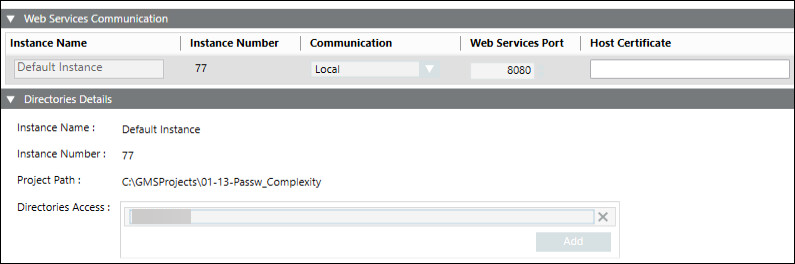

Configure the Web Service Settings
- Click Edit
 .
. - Click Next
 .
. - The Project Settings tab displays. One default WSI instance with default configuration is added.
- In the Web Services Communication expander, provide the details as follows:
- Enter a unique instance name to change the default name of the WSI instance.
- From the drop-down list under Communication, select the communication type as either Secured or Local.
- Modify the default ports under Web Services Port, for the Secured (8443) or Local (8080) Communication type to change the default values.
NOTE: For every WSI instance, enter a unique port number. - Click Browse and select the host certificate, and click OK.
- For adding more WSI instances, click Add.
NOTE: Recommended maximum WSI instances to be added is 10. - (Optional) Click on the Web Services Instance row to configure and open the Directories Details expander.
- Add Directories folder in Directories Access tab.
- Click Save
 .
. - The WSI settings are saved.
- To view the web service settings, click Web Services Settings tab.
- Click Start Project
 .
.
